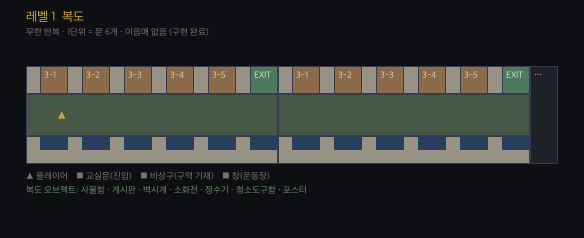
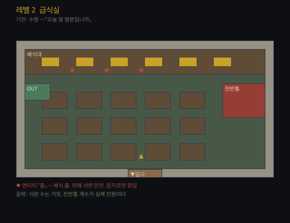
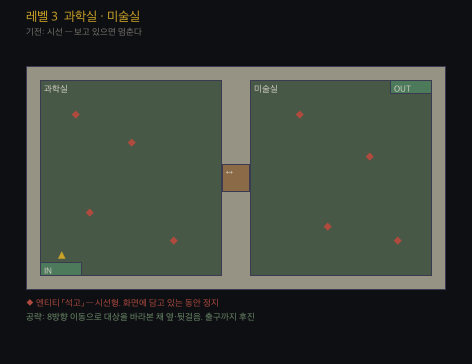
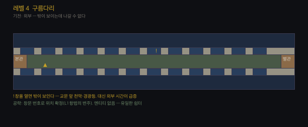
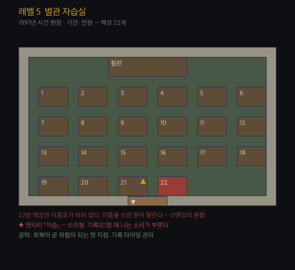
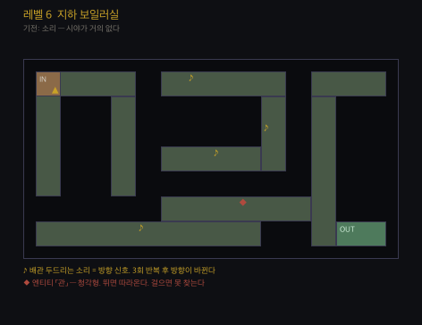
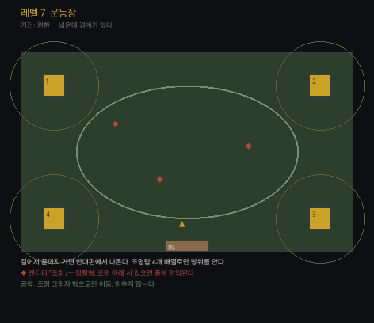
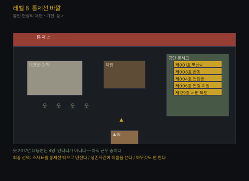

스토리보드
8레벨 전체의 비트 구성. 각 레벨 = 1막.
배치도는 설계 도면이지 스크린샷이 아니다. 레벨 1만 구현되어 있다.
전체 구조 — 3부
| 부 | 레벨 | 플레이어가 믿는 것 | 실제 |
|---|---|---|---|
| 1부 · 갇혔다 | 1 ~ 3 | 나가는 길을 찾으면 된다 | 길은 없다. 적어내야 한다 |
| 2부 · 여기 있었다 | 4 ~ 6 | 우리가 처음이 아니다 | 셋이 먼저 있었다 — 1997 · 2008 · 2017 |
| 3부 · 우리가 채운다 | 7 ~ 8 | 우리는 나갈 것이다 | 나가는 것과 채우는 것은 같은 절차다 |
레벨 1 · 복도 — 항법

| # | 비트 | 화면 |
|---|---|---|
| 1 | 정전. 차단기를 올린다. 불이 들어온다 | 암전 → 형광등 점등음 |
| 2 | 복도가 안 끝난다 | 카메라가 오른쪽으로 길게 이동 |
| 3 | 문패가 3-1부터 다시 시작한다 | 3-5 다음 EXIT, 그다음 다시 3-1 |
| 4 | 「E — 적어두자」 | 수첩 창. HUD에 「기록 이후 +0」 |
| 5 | 교실에 들어간다. 아까 그 교실이다 | 2026년 교실. 문제집이 3번까지 |
| 6 | 3단위. 교실 안이 달라졌다 | 형광등 하나 깜빡임. 근무명령서 |
| 7 | 6단위. 우리 학교 학생이 아니었다 | 어둡다. 운동화 1█켤레 |
| 8 | 9단위. 1997년이다 | 형광등이 꺼져 있다. 창빛만 |
| 9 | 비상구. 「현재 구역을 기재하십시오」 | 수치 입력창 |
| 10 | 정확히 적으면 나간다 / 틀리면 그대로 처리된다 | 엔딩 A · B · C · D |
막 마지막 문장 — 「기재한 대로 처리된다」는 경고가 아니라 설명이었다.
레벨 2 · 급식실 — 수량

| # | 비트 |
|---|---|
| 1 | 급식실. 배식대에 식판이 쌓여 있다. 아직 따뜻하다 |
| 2 | 배식구가 묻는다 — 「오늘 몇 명분입니까」 |
| 3 | 식판을 센다. 의자를 센다. 숫자가 매번 다르다 |
| 4 | 줄이 서 있다. 뒤에 붙으면 아무 일 없다 |
| 5 | 급해서 앞지른다 → 앞의 것이 뒤를 돌아본다 |
| 6 | 잔반통을 연다. 실제 인원이 거기 있다 |
| 7 | 정확한 수를 적어 넣으면 배식구가 열린다 |
핵심 — 세는 대상이 여럿일 때 무엇을 세느냐가 답이다. 그리고 자기를 포함해서 세느냐가 갈림길이다.
레벨 3 · 과학실 · 미술실 — 시선

| # | 비트 |
|---|---|
| 1 | 인체모형이 서 있다. 원래 거기 있었다 |
| 2 | 지나쳐 간다. 돌아보면 자세가 다르다 |
| 3 | 바라보고 있으면 안 움직인다는 걸 안다 |
| 4 | 문까지 뒷걸음질로 간다 |
| 5 | 미술실. 석고상에는 얼굴이 없다 |
| 6 | 어디를 보는지 알 수 없다 → 규칙이 바뀐다. 조명이 켜져 있어야 멈춘다 |
| 7 | 차단기를 올린 채로 통과한다 |
핵심 — 1막에서 배운 규칙이 2막에서 한 번 뒤집힌다.
레벨 4 · 구름다리 — 외부

| # | 비트 |
|---|---|
| 1 | 본관과 별관 사이. 유일하게 밖이 보인다 |
| 2 | 운동장 조명이 켜져 있다. 교문 앞에 천막이 쳐져 있다 |
| 3 | 창을 연다. 소리가 안 들어온다 |
| 4 | 창을 열 때마다 외부 시간이 급증한다 |
| 5 | 천막 수가 늘어 있다. 경광등이 돌고 있다 |
| 6 | HUD에 처음으로 「봉인까지 ██시간」이 뜬다 |
| 7 | 엔티티가 없다. 여기서만 아무 일도 안 일어난다 |
핵심 — 유일한 쉼터를 2막 한가운데 둔다. 그리고 그 쉼터에서 플레이어는 처음으로 시계를 본다.
레벨 5 · 별관 자습실 — 인원

| # | 비트 |
|---|---|
| 1 | 1997년 그 방이다. 아카이브 제129호의 현장 |
| 2 | 책상 22개. 이름표 21개 |
| 3 | 22번 책상만 비어 있다 |
| 4 | 무감각이 오른다. 기록해야 한다 |
| 5 | 기록한다 → 의자 끄는 소리가 한 번 난다 |
| 6 | 회복하려면 불러야 한다. 이 방에서 처음으로 살려면 위험해야 한다 |
| 7 | 22번 자리에 이름을 쓰면 문이 열린다 |
| 8 | 쓰지 않고 나가는 길도 있다. 훨씬 어렵다 |
핵심 — ★ D엔딩의 원형. 1막 조사표에서 흘린 것이 여기서 회수된다. 그리고 플레이어는 이 시점에 안다 — 「나가는 것」과 「채우는 것」은 같은 문이다.
레벨 6 · 지하 보일러실 — 소리

| # | 비트 |
|---|---|
| 1 | 손전등 반경 말고는 아무것도 안 보인다 |
| 2 | 어디선가 배관을 두드리는 소리가 난다 |
| 3 | 소리 쪽으로 간다. 3번 울리고 방향이 바뀐다 |
| 4 | 급해서 뛴다 → 소리가 멈춘다 |
| 5 | 걷는다. 다시 울린다 |
| 6 | 두드리는 게 뭔지 끝까지 안 나온다 |
| 7 | 소각로 앞에 2008년 이송 기록이 타다 남아 있다 |
핵심 — 세는 것이 시각에서 청각으로 옮겨간다. 여전히 세고 있다.
레벨 7 · 운동장 — 원환

| # | 비트 |
|---|---|
| 1 | 처음으로 하늘이 있다 |
| 2 | 야간 조명 4개가 켜져 있다. 넓다 |
| 3 | 끝까지 걸어간다 → 반대편에서 나온다 |
| 4 | 조명탑 번호 배열로만 방위를 안다 (1-2-3-4 시계방향) |
| 5 | 조명 아래 줄 맞춰 선 것들이 있다 |
| 6 | 멈춰 서면 양옆의 간격이 맞춰진다 |
| 7 | 그림자로만 이동해 교문 쪽으로 간다 |
| 8 | 교문이 열려 있다. 나가면 통제선이다 |
핵심 — 「넓은데 나갈 수 없다」. 벽이 아니라 원환이 가둔다. 1막의 반복 복도와 같은 구조를 탁 트인 곳에서 다시 보여준다.
레벨 8 · 통제선 바깥 — 문서

| # | 비트 |
|---|---|
| 1 | 통제 테이프. 천막. 차량. 봉인 현장이다 |
| 2 | 대응반원 4명이 있다. 사람이다. 말도 한다 |
| 3 | 「교대 인원 아직 안 왔어요?」 |
| 4 | 근무명령서 종료일란이 공란이다. 9년째다 |
| 5 | 천막 뒤에 공단 문서고가 있다 |
| 6 | 제001호 「묵산시」 — 1998년에 이 도시 전체가 발생했다 |
| 7 | 제008호 「반경」 — 사람이 있으면 자라지 않는다 |
| 8 | 제129호 「서편 복도」 — 2001년에도 학교 복도가 자랐다. 미귀환 2명 |
| 9 | 국가는 묵산시를 구하지 못한 게 아니다. 보고 배운 것이다 |
| 10 | 조사표가 놓여 있다. 조치 의견란에 이미 「봉인」이 적혀 있다 |
| 11 | 작성자란이 비어 있다 |
최종 선택
| 선택 | 결과 |
|---|---|
| 생존자란에 이름을 쓴다 | 문이 열린다. 집에 간다. 다음 조사표 인원란이 하나 는다 |
| 아무것도 안 한다 | 72시간이 지난다. 봉인된다 |
| 조사표를 통제선 밖으로 던진다 | 다음 조사표의 조치 의견란이 공란이다 ← 진엔딩 |
같은 종이가 한 번은 교본이 되었고, 한 번은 증거가 된다.
차이는 받은 쪽이 그 칸을 채우느냐 비우느냐뿐이다. → [[15-전사]]
반복되는 시각 모티프
| 모티프 | 등장 |
|---|---|
| 공란(空欄) | 당번표 목요일 · 근무명령서 종료일 · 22번 이름표 · 조사표 생존자란 · 작성자란 |
| 숫자가 하나 어긋남 | 대걸레 6 / 교실 5 · 이름표 21 / 책상 22 · 방독면 4 / 대응반 4 |
| 20:41 | 모든 레벨의 벽시계가 같은 시각 |
| 같은 필적 | 2008년 확인란 서명 1█건 |
| 아직 따뜻함 | 급식 · 정수기 냉수 · 형광등 |
묵산 — 게임 기획 정본 · 이 문서는 창작물입니다. 등장하는 지명·기관·인물·제도 운용 사례는 모두 가상입니다.